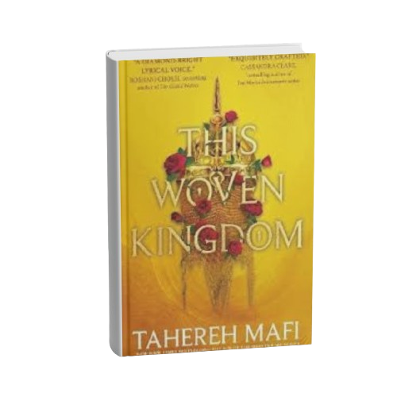
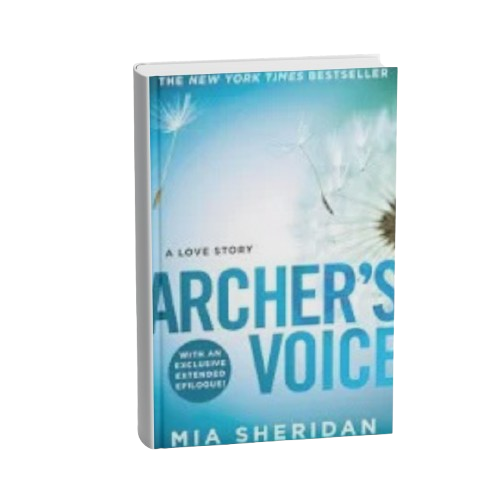

okay so this is going to sound a little sappy but hear me out. i was curled up the other day with one of our preloved copies (not preowned, we're keeping preloved, it just sounds nicer) and about halfway through i noticed something in the margins. tiny pencil writing. underlines under certain lines. a little "!!" next to a quote that honestly wasn't even the most obvious "big moment" line in the chapter. and i just sat there for a second like. someone else held this exact book. someone else got to this exact page and felt something strong enough that they picked up a pencil and left a piece of themselves there. that's honestly the whole magic of secondhand books for me. you're not just getting the story, you're getting this quiet little window into how someone else's brain worked while they read it. what they underlined isn't always what i would've underlined. sometimes it's a line i barely noticed the first time through, and seeing it circled makes me go back and actually sit with it properly. it's like getting a second reader's perspective built right into the pages, for free, without even asking for it. there's something so special about that. a brand new book is just... yours. which is great, don't get me wrong. but a preloved one already has a history before you even open the cover. someone laughed at the same joke. someone cried at the same page. maybe someone dog-eared it right before the twist because they knew they'd need to come back to reread it once everything clicked. so yeah. next time you pick up one of our used copies and spot a little note or a highlighted line, don't skip past it. sit with it for a second. it's not "damage" to the book, it's proof the book already did its job once before it got to you. and honestly? i think that makes it even more special.
/* THESE ARE ALL OF MY OWN BOOK REVIEWS*/
Little Woods Monthly Reads
A few from my own shelf that I couldn't stop thinking about this month.

Binding 13
Owner's Note: This series completely won me over — funny, tender, and heartbreaking in equal measure. What I loved most was how the relationship kept growing even while they were apart, with honest communication instead of the usual manufactured drama. A genuinely beautiful read.

This Woven Kingdom
Owner's Note: Beautifully written, with dialogue that's an absolute pleasure to read. Alizeh is a compelling lead, even when her choices left me questioning her — and the book's fast pace made for a great way to break out of a reading slump. A fun, engaging start to the series that I'd happily recommend.

Archer's Voice
Owner's Note: One of the most moving stories I've read. Two people healing from their own trauma find each other, and watching Archer grow past his social anxiety to become the man Bree deserves is genuinely inspiring. A powerful reminder that disability doesn't define a person. 5/5.